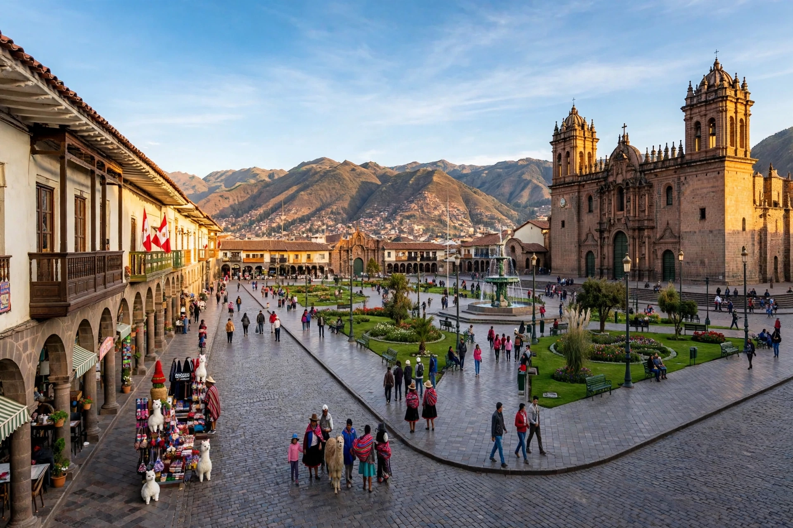

| Cusco | |
|---|---|
| Country | Peru |
| Region | Cusco Region |
| Elevation | 3,399 m (11,152 ft) |
| Founded | Inca capital, by legend c. 1200; Spanish refoundation March 23, 1534 |
| Known as | Capital of the Inca Empire; "navel of the world" (Qosqo) |
| Status | UNESCO World Heritage Site (1983) |

Cusco (Spanish: Cuzco; Quechua: Qusqu), officially the Imperial City of Cusco, is a city in southeastern Peru near the Urubamba Valley of the Andes, at an elevation of about 3,400 meters. It was the capital of the Inca Empire from the thirteenth century until the Spanish conquest in the 1530s, and is one of the oldest continuously inhabited cities in the Americas. In 1983 the city was declared a UNESCO World Heritage Site, and it is today the principal gateway for tourism to Machu Picchu and the Sacred Valley.
In Quechua the name Qosqo means "navel" — the navel of the world, the center from which the four quarters of the empire, Tawantinsuyu, radiated. Foundation legend credits Manco Cápac, the first Sapa Inca, with settling the valley around 1200 after sinking a golden staff into the earth. The ninth Inca, Pachacuti (reigned from 1438), rebuilt the city as an imperial capital laid out in the form of a puma, its head the great fortress-temple of Sacsayhuamán on the hill above. The city's core was built of astonishingly precise fitted stonework — polygonal masonry without mortar — centering on the great plaza (divided into Huacaypata and Cusipata) and the Coricancha, the temple of the sun god Inti, its walls once sheathed in gold plate. Radial roads and ritual sight-lines (ceques) linked the capital to shrines throughout the empire.
Francisco Pizarro's Spaniards entered Cusco in November 1533 after the capture and execution of Atahualpa, and formally refounded it as a Spanish city on March 23, 1534. The Inca Manco Inca, initially a puppet ruler, rose in 1536 and besieged the city for ten months, burning much of it but failing to retake it; the fortress battle at Sacsayhuamán cost the life of Juan Pizarro. Cusco then became the prize of the conquerors' civil wars: Diego de Almagro seized it in 1537, and his defeat and execution followed in 1538. In the colonial centuries the Spanish built churches, convents, and palaces directly atop Inca walls — the church of Santo Domingo over the Coricancha, the cathedral over the palace of Viracocha. Devastating earthquakes in 1650 and 1950 repeatedly revealed the pattern: colonial buildings cracked and fell while the Inca masonry beneath them stood. Cusco was also the center of the Cuzco School of painting, fusing European religious art with Andean artists and motifs.
The city was a focus of indigenous resistance: in 1780 Túpac Amaru II launched his great rebellion in the region, and his descendant-namesake later took the name of the revolutionary Túpac Amaru movement. In 1933 Cusco was proclaimed the "Archaeological Capital of South America". Today its economy rests overwhelmingly on tourism drawn by its Inca and colonial fabric and by the rail and road routes to Machu Picchu; the great festival of Inti Raymi, the Inca festival of the winter solstice suppressed in colonial times, is re-enacted each June 24 at Sacsayhuamán before vast crowds.